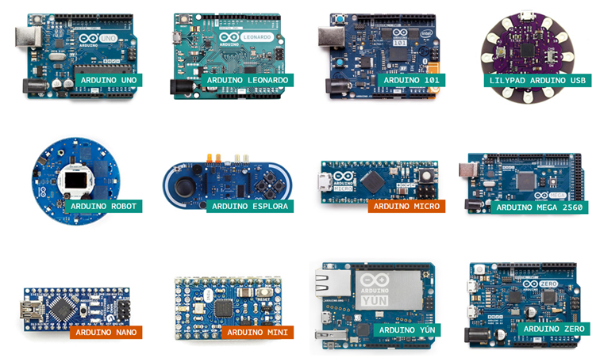
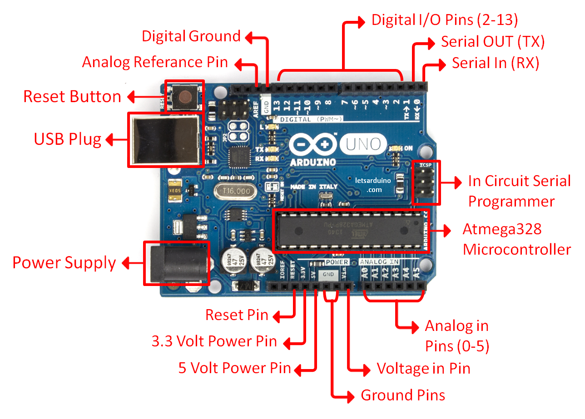
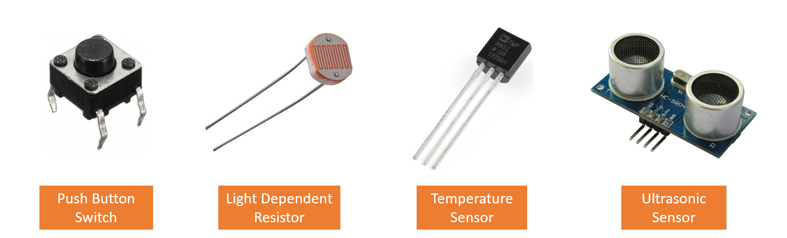
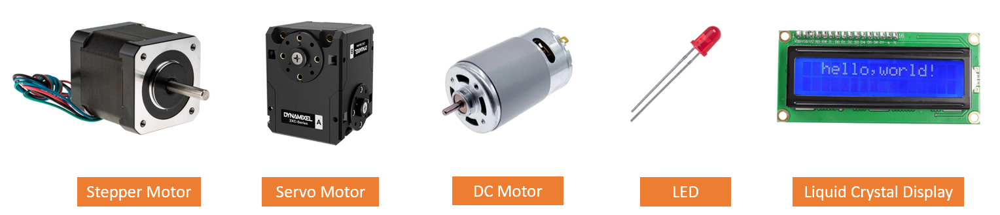
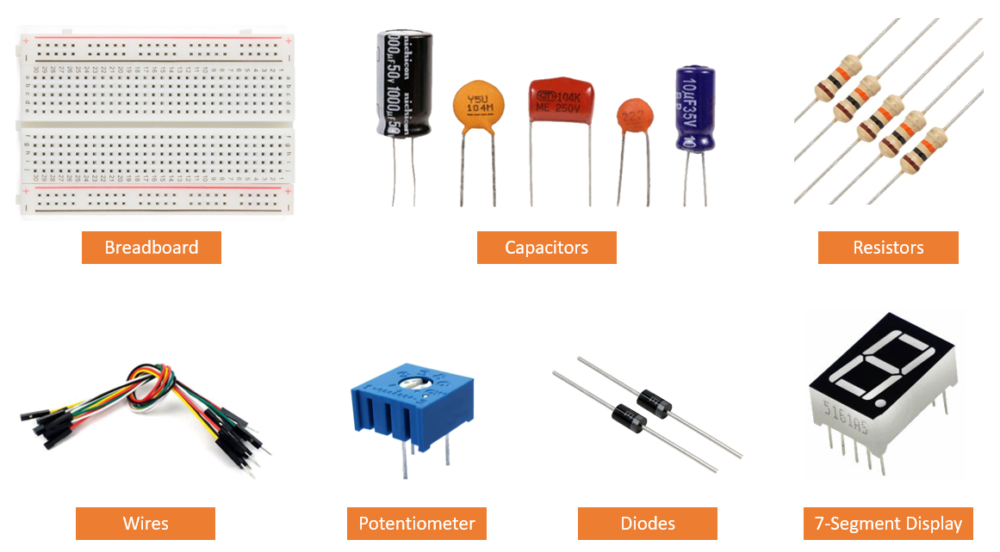
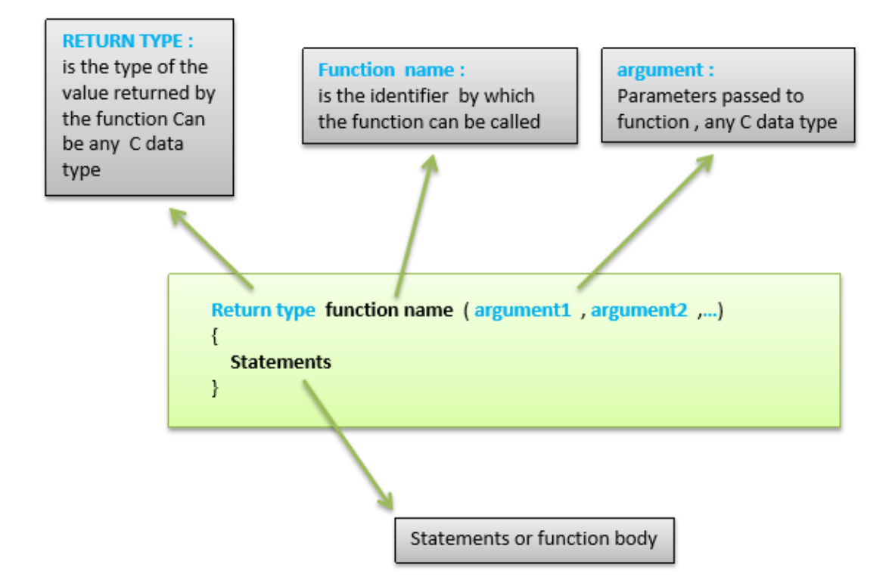
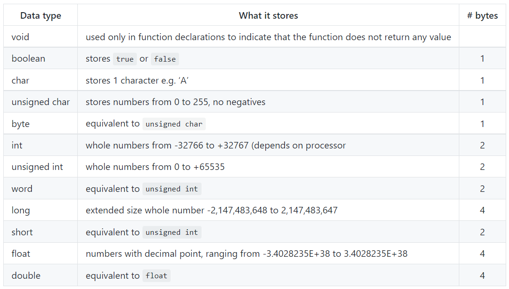
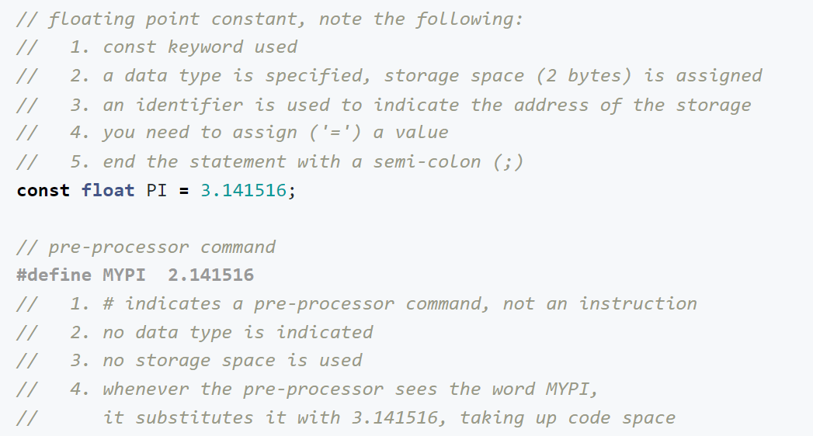
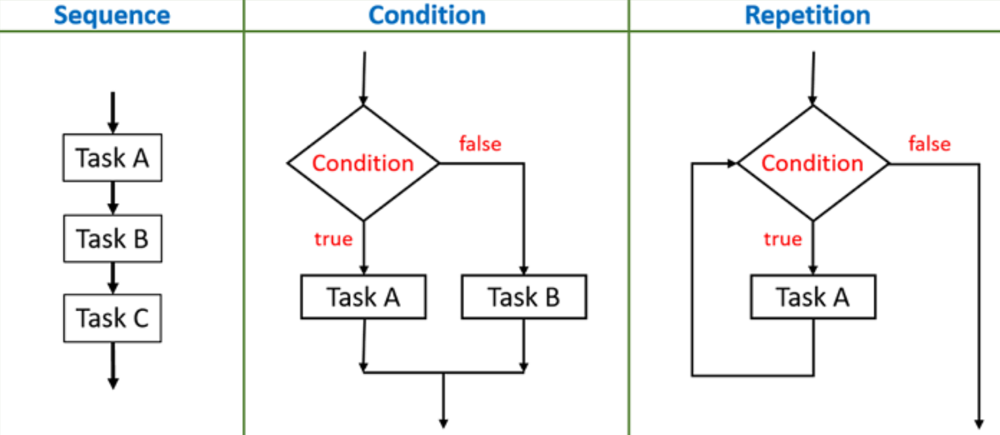
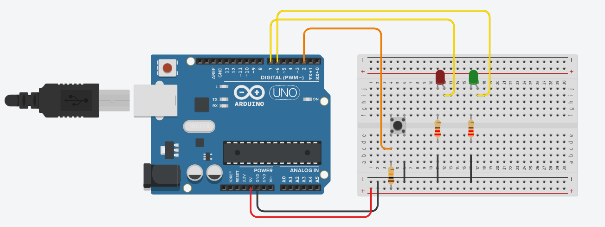

Embedded Programming
An embedded programming language is a programming language that developers use in embedded systems. For this module, I will be using Arduino as my Embedded System Device.
What is an Arduino?
Arduino is an open-source electronics platform based on easy-to-use hardware and software. Arduino boards are able to read inputs such as light/temperature/sound, and turning it to an output such as activating a motor or turning on an LED. Arduino is an easy and accessible way for software developers to enter the world of microcontroller programming.
How does an Arduino Work?
An Arduino System comprises of both software and and hardware. We can create any system such as a Traffic Light System, and store the dedicated function in it to perform a specific task. In order to store any function into the Arduino board, we would need to download the software Arduino IDE. The codes that we create can then be uploaded into the Arduino board. The Arduino Board would be connected to a series of electrical components to make the entire system work.
Here are some types of Arduino boards available:
A close-up on the Arduino UNO board:
| ADVANTAGES | DISADVANTAGES |
|---|---|
| 1. Minimumal power consumption | 1. Can run only a single sketch at a time |
| 2. Easy programmable interface | 2. Limited number of programming languages |
| 3. Inexpensive | 3. Small space to work with |
| 4. Library of examples available |
Electronic Components
Electronic components are connected together to form a close circuit. A close circuit is made to perform a task such as lighting up a lightbulb. There are 2 types of electronic components, input and output devices. The key distinction between an input and an output device is that an input device sends data to the computer, while an output device receives data from the computer.
Input Devices
Input devices are used to provide data and control signals to the information processing system such as the Arduino.
Below are some basic input devices :
Output Devices
An output device is a piece of computer hardware that receives data from a computer and then translates that data into another form. That form may be audio, visual, text, or hard copy such as a printed document.
Below are some basic output devices :
More Basic Electronic Components :
Breadboard - a solderless construction base for prototyping of electronics.
Capacitor - a device that stores electrical energy in an electric field; Blocks direct current but allows alternating current to flow through.
Resistor - provides resistance to current flow and divide voltages.
Wires - connects electrical components together.
Potentiometer - a three-terminal resistor with a sliding or rotating contact that forms an adjustable voltage divider. It can act as a variable resistor/rheostat.
Diode - allows the flow of current in only one direction.
7-Segment Display - a form of electronic display device for displaying decimal numerals.
Important Formulas
Ohms Law : Voltage = Current * Resistance (V=IR)
Power : Power = Voltage * Current (P=VI)
Kirchoff's Voltage Law states that the sum of all voltages around any closed loop in a circuit must equate to zero.
Kirchoff's Current Law states that current flowing into a node (or a junction) must be equal to current flowing out of it.
Below are some useful links before we dive into programming:
1. A simple guide to electronic components
2. How to Read Resistor Color Codes
4. Breadboard tutorial: How to use a breadboard (for beginners)
3. You can learn Arduino in 15 minutes
Arduino Programming
I will be using Tinkercad to try out different simulations of different circuits. Tinkercad is a free online 3d modelling, circuit building and coding website. As designing a circuit is dangerous and not easy, Tinkercad helps me to check if my wiring of a circuit is correct. This would prevent any accidents or damaging physical eletronic components from happening.
Before we start on some mini Arduino projects, I will be going through some common programming language that anyone should know before they start.
Arduino Programming Language :
Arduino programming language can be divided in three main parts: functions, values (variables and constants), and structure. Click here to understand what each Arduino code does.
Functions :
Functions are blocks of code that perform a specific task. It must return a result, which is the data type of the function declaration. They are also declared outside any other functions, usually below the loop function.
The Arduino Uno board has 14 pins which can be configured as digital I/O. It means giving/receiving logic levels of HIGH (+5V) or LOW (0V). The input or output is configured using the software.
pinMode() is used to configure the port to be input or output. The port stays in this mode until another pinMode() is applied, reset occurs or powered off.
digitalRead() is used to read the input.
digitalWrite() is to output a value.
The Arduino Uno board has 6 pins which can be configured as analog I/O. Signals from sensors that measure temperature, pressure, or flow rate are analog signals. It's value continually varies over time.
analogRead() is used to reads the value from the specified analog pin.
Variables :
Variables consists of data types and constants.
A data type determines the amount of memory required to store the bit pattern and how the storage is interpreted.
When you require a value that does not change through-out the program, Declaring a constant keep track of it. A constant has an identifier as well as a value.
Structure :
Structured programming can reduce the occurance of logical errors in any programming language. It is a technique that specifies the method of writing a code which is easy to follow and understand.
Traffic Light System :
How it Works: The Serial Monitor would show 'DON'T WALK'. At the same time, the Red LED would be on. When the push button switch is pressed, nothing will change for 5 seconds. After 5 seconds, the Serial Monitor would show 'WALK'. At the same time, the Green LED would turn on for 6 seconds. After 6 seconds, the cycle will repeat.
